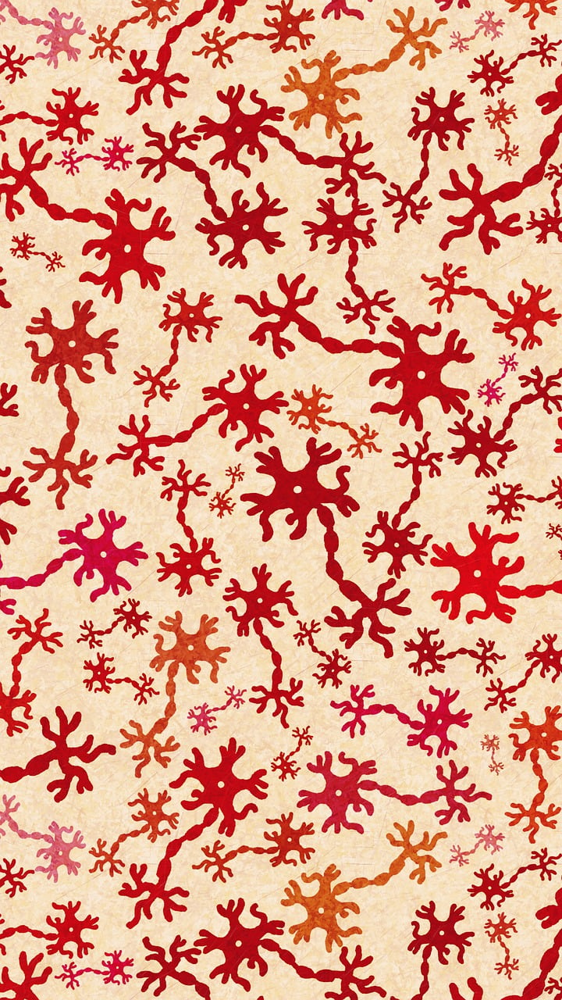
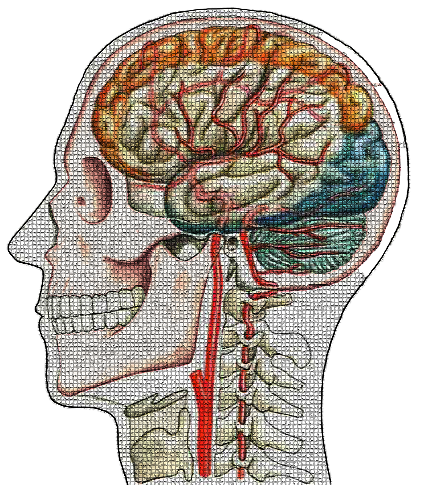
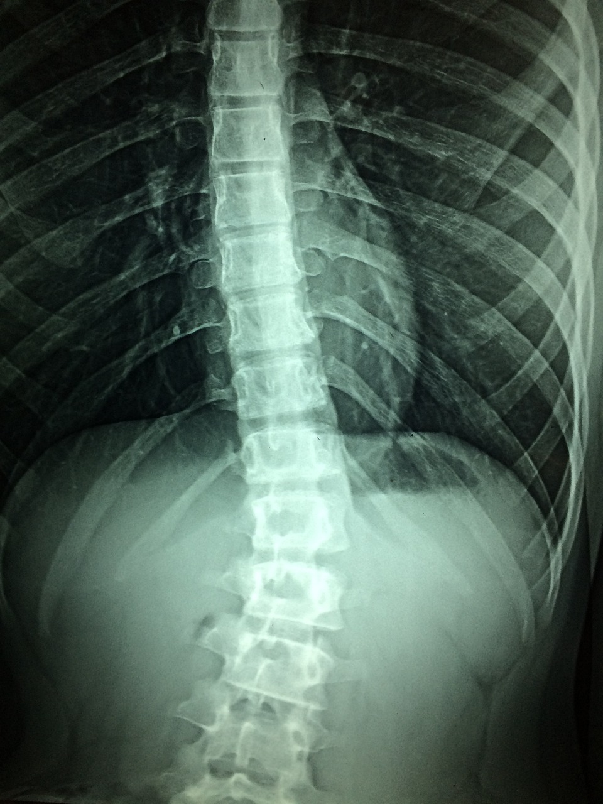
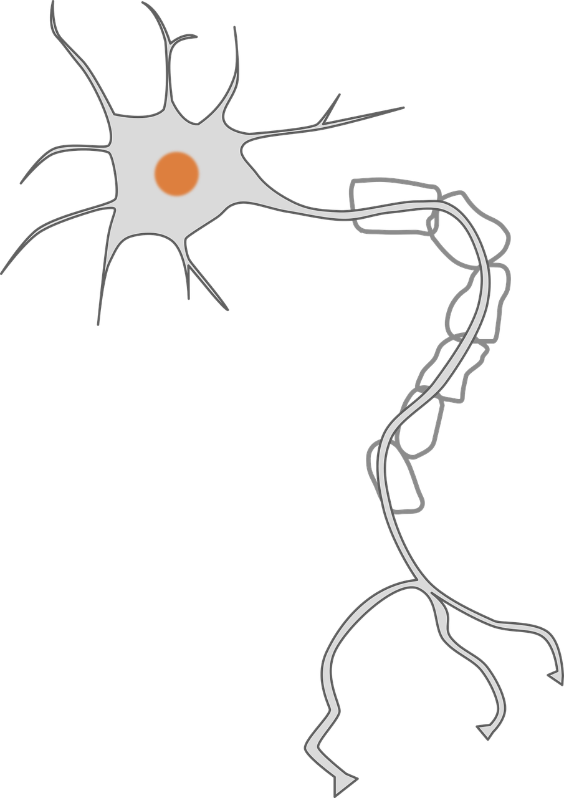
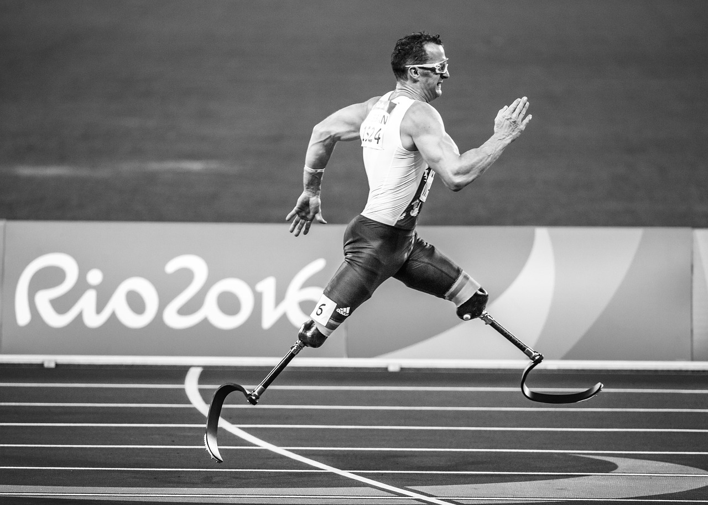

GENERAL PHYSIOTHERAPY
Değerlendirme ve Tanı
Fizyoterapi, hastanın durumunu çeşitli testler ve değerlendirmeler yoluyla inceleyip teşhis etmeyi içerir. Bu, terapistin sorunun temel nedenini anlamasına ve uygun bir tedavi planı geliştirmesine yardımcı olur.
Tedavi ve Müdahale
Değerlendirme tamamlandıktan sonra fizyoterapistler, hastaların iyileşmesine ve fonksiyonlarını yeniden kazanmasına yardımcı olmak için çeşitli teknikler ve müdahaleler kullanır. Bunlar, bireyin ihtiyaçlarına göre uyarlanmış egzersizler, manuel terapi, elektroterapi ve diğer yöntemleri içerebilir.
Eğitim ve Önlem
Fizyoterapistler, yaralanmaları önlemede ve genel sağlık durumunu desteklemede de önemli bir rol oynar. Gelecekte oluşabilecek sorunları önlemek ve sağlıklı bir yaşam tarzını sürdürmek için hastalara doğru vücut mekaniği, ergonomi ve egzersiz teknikleri hakkında eğitim verirler.
neurological rehabilitation

Nörolojik Rehabilitasyon
Nörolojik rehabilitasyon, nörolojik rahatsızlıkları olan bireylerin tedavisine odaklanan bir fizyoterapi dalıdır ve hareketlerini ve fonksiyonel yeteneklerini geliştirmeyi hedefler.

İnme Rehabilitasyonu
Nörolojik fizyoterapistler, felç sonrası bireylerin hareket kabiliyetini geri kazanmalarına ve bağımsızlıklarını yeniden kazanmalarına yardımcı olmak için hedeflenmiş egzersizler ve terapiler uygular.

Spinal Kord Yaralanması Rehabilitasyonu
Omurilik yaralanmaları için fizyoterapi, omurilik hasarı olan bireylerin güç, hareket kabiliyeti ve fonksiyonel yeteneklerini artırmaya odaklanır.
Parkinson Rehabilitasyonu
Nörofizyoterapistler, Parkinson hastalığı olan bireylerde hareket kabiliyeti, dengeyi iyileştirmek ve kas sertliği ile titreme gibi semptomları azaltmak için egzersizler ve hareket stratejileri uygular.

Multiple Sclerosis (MS) Rehabilitasyonu
Nörofizyoterapi, egzersizler, yorgunlukla başa çıkma stratejileri ve günlük aktiviteleri optimize etme yoluyla, multipl sklerozla ilgili semptomları yönetmeyi ve fiziksel fonksiyonu artırmayı amaçlar.
Travmatik Beyin Yaralanması (TBY) Rehabilitasyonu
Fizyoterapistler, travmatik beyin yaralanması yaşayan bireylerin motor becerilerini, koordinasyonlarını ve günlük aktivitelerdeki bağımsızlıklarını yeniden kazanmalarına yardımcı olurken, aynı zamanda bilişsel ve iletişim bozukluklarını da ele alırlar.
Spor Fizyoterapisi
Spor fizyoterapisi, sporcuların ve aktif bireylerin sporla ilişkili yaralanmalarını önlemeye ve tedavi etmeye odaklanır. Performansı optimize etmek ve güvenli bir şekilde iyileşmelerini sağlamak için özel teknikler ve egzersizler kullanır. Bu yaklaşım, sadece yaralanmayı değil, aynı zamanda sporcunun genel fiziksel zindeliğini ve sağlığını da ele alan bütünsel bir yaklaşımdır. Spor fizyoterapisi ayrıca rehabilitasyon ve iyileşme yönetimini içerir; bu, doku iyileşmesini teşvik etmeyi, fonksiyonu restore etmeyi ve yeniden yaralanmayı önlemeyi amaçlar. Böylece sporcular, zirve performans seviyelerini zamanında ve güvenli bir şekilde geri kazanabilirler.

Pediatrik Rehabilitasyon


:max_bytes(150000):strip_icc()/muscular-dystrophy-types-5180145_final-2c536062cacd49e8a3ee1261e4a057d3.jpg)

...